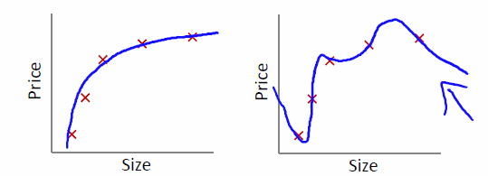

机器学习基本概念（四）｜奥卡姆剃刀和没有免费的午餐定理
摘要：“奥卡姆剃刀”和“没有免费的午餐”是机器学习中两个很基本的原则和定理。由于名字有点怪，所以初学者可能在理解上陷入误区。本文试图用简洁易懂的方式解释这两个原则和定理，并告诉大家它们的名字是怎么来的。
关键字：机器学习, 奥卡姆剃刀, 没有免费的午餐
“奥卡姆剃刀”和“没有免费的午餐”是机器学习中两个很基本的原则和定理，很多书都会提到它们来提升逼格。不过，烦就烦在它们的名字取的有些不好理解，初学者望文生义就容易错误理解。其实，了解了它们名字的由来，这两个原则和定理是很容易想明白的，也不用去纠结如何证明它们，因为它们更接近哲学思想，而不是你会在实际项目中用到的公式。
奥卡姆剃刀（Occam’s razor）
“奥卡姆剃刀”其实并不是机器学习领域产生的定理，事实上，它是哲学领域的一个思想。这个思想说起来也很简单，7个字，“简单的是最好的”。
相信大家不难理解这个哲学思想，比如在数学领域，大多数数学家认为“好的公式应当是简洁明了的”，就是“奥卡姆剃刀”的体现。
这个思想我能理解，但为什么叫这么奇怪的名字？容易想到，“奥卡姆”是提出这个思想的人的名字；至于为什么叫“剃刀”是因为这个思想的提出，对封建旧思想来说是把锋利的剃刀，狠狠地剃除教会的旧思想。（具体是如何剃除旧思想的就不展开了）
那这个思想是怎么应用在机器学习领域的呢？用下图就可以概括：

了解机器学习的同学不难看出，上图表示的是过拟合问题，不了解的同学也不必担心，可以把上图想象成用曲线拟合几个点。
那么问题来了，上图中，哪种拟合方式是比较好的呢？相信大多数人都会选择左小图的拟合方式。机器学习领域也通常认为左小图是比较好的，原因就是“奥卡姆剃刀”的思想，“简单的是最好的”。
有些敢于挑战权威的同学可能会反驳，“怎么证明图1左小图是更简单的呢？我可以认为右小图更简单”。是的，这个问题周志华的西瓜书中也有提到，其实是没有办法说明哪种更简单。这也是哲学问题的通病，难以联系到实际中，往往会有多种解读。
不过我们不用去纠结怎样才算“简单”，只要明白这个词是什么意思就可以了。
可能还会有同学反驳，“我同意左小图是简单的，但万一实际情况中右小图才是更符合结果的拟合方式呢？”。这个想法也是对的，我们无法证明实际情况一定是左小图的拟合方式最好。这也就是下面“没有免费的午餐”定理要说明的。
“没有免费的午餐”定理（no free lunch, NFL）
这个定理的名字乍一看很唬人，也有很多初学者因为这个名字陷入了误区。我们可以先把名字放在一边，先看定理的内容。
这个定理证明起来很复杂，一长串的数学公式，但说明白其实只要一句话，“没有一种机器学习算法是适用于所有情况的”。
这也符合我们的直觉。举个例子吧，比如上图，假设上图的左小图是机器算法A给出的拟合曲线，上图的右小图是机器算法B给出的拟合曲线。我们就一定能说机器算法A比机器算法B更好吗？或者说左小图的拟合曲线一定比右小图更符合实际情况吗？都不能。“没有免费的午餐”定理证明了对于所有机器学习问题，机器算法A更好与机器算法B更好的概率是一样的。更一般地说，对于所有机器学习问题，任何一种算法（包括瞎猜）的期望效果都是一样的。
那我们还学个啥？既然任何算法的期望效果和瞎猜一样，我们为什么还要学？
注意，这个定理有个前提：“对于所有机器学习问题，且所有问题同等重要”。而我们实际情况不是这样，我们在实际中往往更关心的是一个特定的机器学习问题，对于特定的问题，特定的机器学习算法效果自然比瞎猜更好。还是上图的例子，虽然“没有免费的午餐”定理告诉我们：我们不能预计到底是左小图拟合更好还是右小图拟合更好，但聪明的你一定能想到：是好是坏，代入到具体问题中检验一下不就知道了。
这个定理本质上就是告诉我们不要奢望能找到一种算法对所有问题都适用。这么说来，这个定理其实有点废话，因为我们面对的总是一个特定的问题，而不是所有问题。
但是这个定理其实揭示了一个哲学思想，“有得必有失”，某一个机器学习算法在某个领域好用，在另外一个领域就有可能不好用，瞎猜在一些情况下不好用，但在某个特定的问题上会很好用。就像能量守恒定理，这里的能量增加，另外一边的能量就会减少。天上掉馅饼被你捡到了，这个时刻你很幸运，但是之后你就会倒霉。
理解了上面一段话，也就明白了这个定理为什么取这么奇怪的名字。